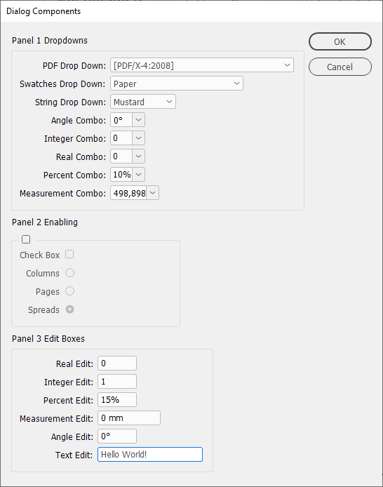
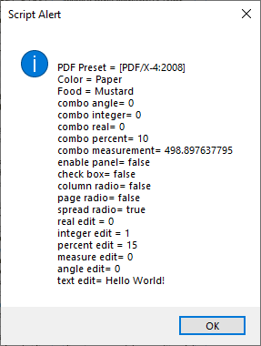

Example of InDesign's built-in dialog class
InDesign has its own built-in dialog class, which in certain cases can be easier to use. Here is a template (by rob day), which covers most of the dialog objects:
//result variables
var pdfDropdown, colorDropdown, foodDropdown, foodList, angleCombo, integerCombo, realCombo, percentCombo, measureCombo,
enablePanel, ckBox, colRadio, pageRadio, spreadRadio,
realEdit, intEdit, percentEdit, measureEdit, angleEdit, textEditField, pageWidth, mu;
//check for a doc
if (app.documents.length > 0) {
mu = app.scriptPreferences.measurementUnit;
app.scriptPreferences.measurementUnit = MeasurementUnits.PIXELS;
var doc = app.activeDocument;
pageWidth = doc.documentPreferences.pageWidth
makeDialog();
} else {alert("Please open a document and try again.")}
/**
* Make the dialog
* @ return void
*/
function makeDialog(){
//the dialog name
var theDialog = app.dialogs.add({name:"Dialog Components", canCancel:true});
with(theDialog){
with(dialogColumns.add()){
//Panel Dropdowns and Combos
with(dialogRows.add()){
staticTexts.add({staticLabel:"Panel 1 Dropdowns", staticAlignment:StaticAlignmentOptions.LEFT_ALIGN, minWidth: 150});
}
with(borderPanels.add()){
with(dialogColumns.add()){
staticTexts.add({staticLabel:"PDF Drop Down:"});
staticTexts.add({staticLabel:"Swatches Drop Down:"});
staticTexts.add({staticLabel:"String Drop Down:"});
staticTexts.add({staticLabel:"Angle Combo:"});
staticTexts.add({staticLabel:"Integer Combo:"});
staticTexts.add({staticLabel:"Real Combo:"});
staticTexts.add({staticLabel:"Percent Combo:"});
staticTexts.add({staticLabel:"Measurement Combo:"});
}
with(dialogColumns.add()){
pdfDropdown = dropdowns.add({stringList:getPresets(app.pdfExportPresets), selectedIndex:3, minWidth:80});
colorDropdown = dropdowns.add({stringList:getPresets(app.swatches), selectedIndex:2, minWidth:80});
foodList = ["Mustard", "Relish", "Ketchup"];
foodDropdown = dropdowns.add({stringList:foodList, selectedIndex:0, minWidth:80});
angleCombo = angleComboboxes.add({stringList:["0", "90", "180"], editValue:0, maximumValue:360, minimumValue:0, smallNudge:1, largeNudge:10, minWidth:50});
integerCombo = integerComboboxes.add({stringList:["1", "2", "3"], editValue:0, maximumValue:100, minimumValue:0, smallNudge:1, largeNudge:10, minWidth:50});
realCombo = realComboboxes.add({stringList:[".1", ".2", ".3"], editValue:0, maximumValue:1, minimumValue:0, smallNudge:.01, largeNudge:.1, minWidth:50});
percentCombo = percentComboboxes.add({stringList:["10", "15", "20"], editValue:10, maximumValue:100, minimumValue:0, smallNudge:1, largeNudge:10, minWidth:50});
measureCombo = measurementComboboxes.add({stringList:[pageWidth.toString(), "600", "800", "1200", "1800"], editUnits:MeasurementUnits.PIXELS, editValue:pageWidth});
}
}
//Panel 2 Enabling
with(dialogRows.add()){
staticTexts.add({staticLabel:"Panel 2 Enabling", staticAlignment:StaticAlignmentOptions.LEFT_ALIGN, minWidth: 150});
}
enablePanel = enablingGroups.add({checkedState:false, minWidth:150})
with(enablePanel){
with(dialogColumns.add()){
staticTexts.add({staticLabel:"Check Box"});
staticTexts.add({staticLabel:"Columns"});
staticTexts.add({staticLabel:"Pages"});
staticTexts.add({staticLabel:"Spreads"});
}
with(dialogColumns.add()){
ckBox = checkboxControls.add({checkedState:false, minWidth:150});
with(radiobuttonGroups.add()){
colRadio = radiobuttonControls.add({checkedState:true});
pageRadio = radiobuttonControls.add({checkedState:true});
spreadRadio = radiobuttonControls.add({checkedState:true});
}
}
}
//Panel 3 Editable
with(dialogRows.add()){
staticTexts.add({staticLabel:"Panel 3 Edit Boxes", staticAlignment:StaticAlignmentOptions.LEFT_ALIGN, minWidth: 150});
}
with(borderPanels.add()){
with(dialogColumns.add()){
staticTexts.add({staticLabel:"Real Edit:"});
staticTexts.add({staticLabel:"Integer Edit:"});
staticTexts.add({staticLabel:"Percent Edit:"});
staticTexts.add({staticLabel:"Measurement Edit:"});
staticTexts.add({staticLabel:"Angle Edit:"});
staticTexts.add({staticLabel:"Text Edit:"});
}
with(dialogColumns.add()){
realEdit = realEditboxes.add({editValue:0, maximumValue:10, minimumValue:0, smallNudge:.01, largeNudge:.1, minWidth:50});
intEdit = integerEditboxes.add({editValue:1, maximumValue:100, minimumValue:0, smallNudge:1, largeNudge:10, minWidth:50});
percentEdit = percentEditboxes.add({editValue:15, maximumValue:100, minimumValue:0, smallNudge:1, largeNudge:10, minWidth:50});
measureEdit = measurementEditboxes.add({editUnits:MeasurementUnits.MILLIMETERS, editValue:0, maximumValue:1000, minimumValue:0, smallNudge:1, largeNudge:10, minWidth:90});
angleEdit = angleEditboxes.add({editValue:0, maximumValue:360, minimumValue:0, smallNudge:1, largeNudge:10, minWidth:50});
textEditField = textEditboxes.add({editContents:"Hello World!", minWidth:150});
}
}
}
}
//the dialog results
var res = theDialog.show();
if(res == true){
pdfDropdown = app.pdfExportPresets.item(pdfDropdown.selectedIndex);
colorDropdown = app.swatches.item(colorDropdown.selectedIndex);
foodDropdown = foodList[foodDropdown.selectedIndex];
angleCombo = angleCombo.editValue;
integerCombo = integerCombo.editValue;
realCombo = realCombo.editValue;
percentCombo = percentCombo.editValue;
measureCombo = measureCombo.editValue;//returns points
enablePanel = enablePanel.checkedState
ckBox = ckBox.checkedState;
colRadio = colRadio.checkedState
pageRadio = pageRadio.checkedState
spreadRadio = spreadRadio.checkedState
realEdit = realEdit.editValue;
intEdit = intEdit.editValue;
percentEdit = percentEdit.editValue;
measureEdit = measureEdit.editValue;//returns points
angleEdit = angleEdit.editValue;
textEditField = textEditField.editContents
main()
}else{
theDialog.destroy();
}
}
/**
* Script.
* @ return void
*/
function main(){
//the returned dialog values
alert("\nPDF Preset = " + pdfDropdown.name +"\nColor = " + colorDropdown.name +"\nFood = " + foodDropdown +
"\ncombo angle= " + angleCombo + "\ncombo integer= " + integerCombo +"\ncombo real= " + realCombo +
"\ncombo percent= " + percentCombo + "\ncombo measurement= "+ measureCombo +
"\nenable panel= "+ enablePanel + "\ncheck box= "+ ckBox +"\ncolumn radio= "+ colRadio + "\npage radio= "+ pageRadio + "\nspread radio= "+ spreadRadio +
"\nreal edit = " + realEdit + "\ninteger edit = " + intEdit + "\npercent edit = " + percentEdit +"\nmeasure edit= "+ measureEdit +
"\nangle edit= "+ angleEdit +"\ntext edit= "+ textEditField)
app.scriptPreferences.measurementUnit = mu;
}
/**
* Returns a list of item names from the provided collection
* @ param the collection
* @ return array of names
*
*/
function getPresets(p){
var a = new Array;
for(var i = 0; i < p.length; i++){
a.push(p.item(i).name);
}
return a
}

The returned values:

Click here to download the script.